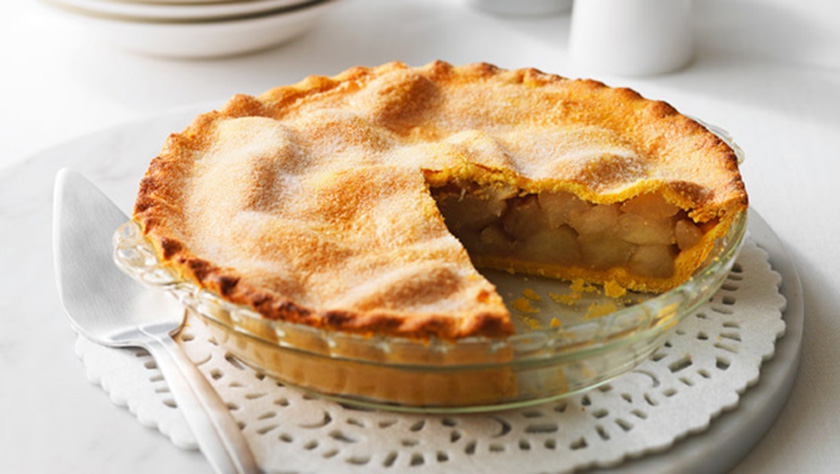

In this exercise we will use Cascading Style Sheets (CSS) to control the styles on our webpage. We will use an external style sheet and modify the default styles of some of our standard HTML tags. We will also create and apply a few IDs and classes as well.
Pre-heat oven to 375 degrees. Peel and cut apples into slices. Place in a large mixing bowl. Sprinkle 1 tsp lemon juice over the top to prevent browning. Sprinkle on the sugar, flour, nutmeg and cinnamon. Mix with your hands to combine.
Using your pre-made pie crust, place the bottom crust inside a 9" pie plate. Make sure you have enough to overlap. Add apple filling and press down. Dot butter on top of the apples. Cover with remaining pie crust. Fold edges underneath and then crimp to seal. Using a fork, or a tip of a knife, poke small holes in the top so that the steam can come out while cooking.
Place in oven and cook for about 1 hour or until the crust is golden brown and it starts to bubble.
For questions about this recipe, please contact Grandma.
For more recipes please visit allrecipes.com.
Cooking Tip: To make sure the pie doesn't drip onto the bottom of the oven, place a cookie sheet lined with aluminum foil on the rack underneath. That way it'll catch all drippings and make clean-up much easier.